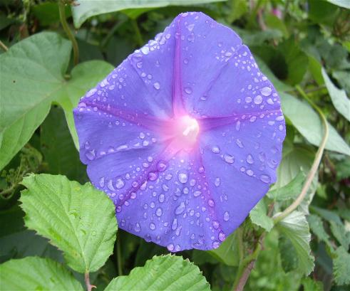

En este apartado podréis ver una selección de fotos de los diversos yacimientos que estamos estudiando así como también podréis añadir aquellas fotos que os gusten porque, para vosotros, tengan un valor determinado.

Noja (Cantabria). Agosto 2008